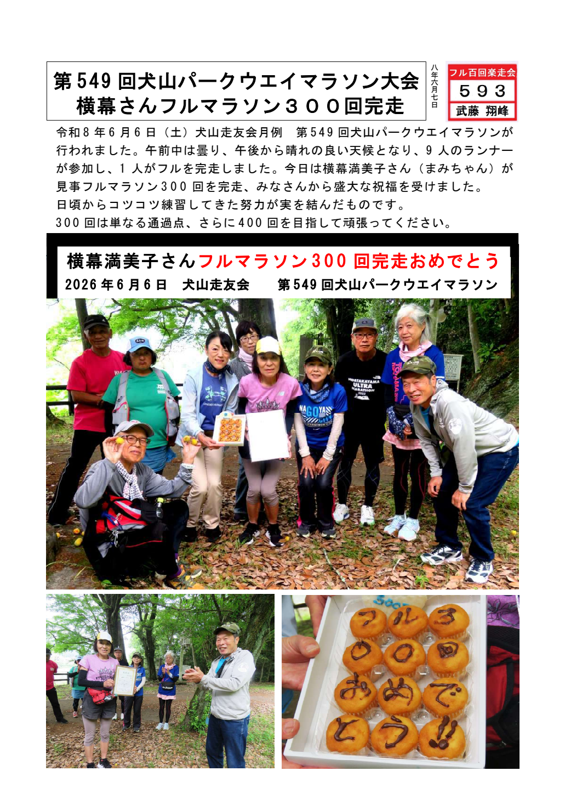
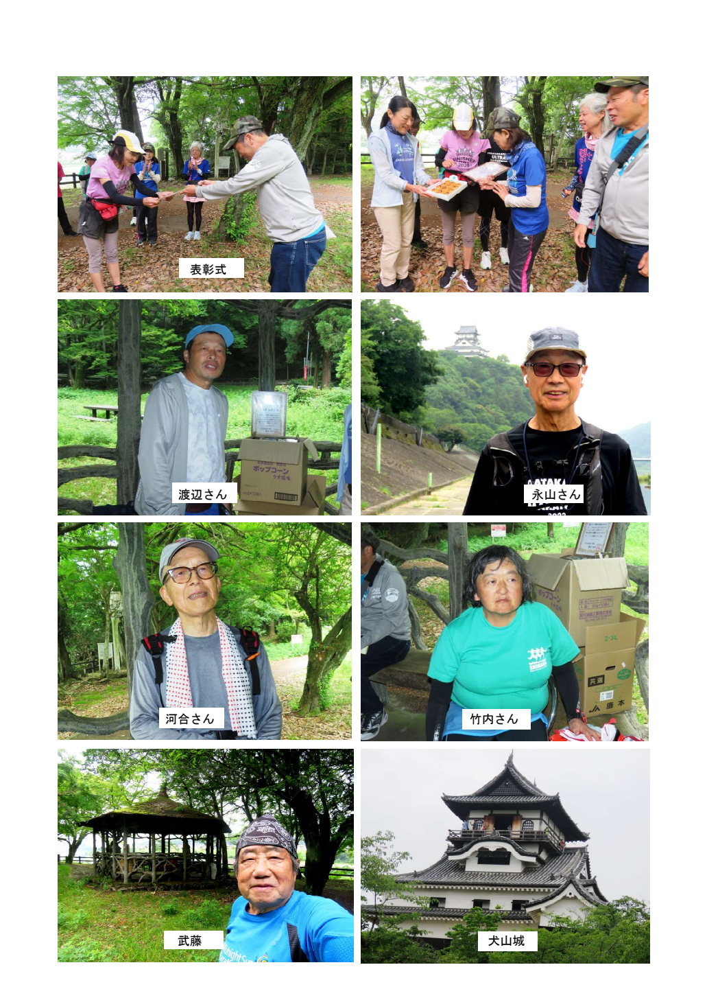

2026-06-06 04:29:29
2026年6月6日（土曜日）（場所：不老公園 天候：曇り 気温：22℃）（エイド担当：鷲見さん・加藤さん）
| No | 氏名 | 種目 | タイム | フル百 |
|---|---|---|---|---|
| 1 | 渡辺 和次 | 16km | 2:30:00 | 804 |
| 2 | 永山 敏巳 | 20km | 3:58:20 | 820 |
| 3 | 竹内 弥富 | 20km | 4:00:00 | 647 |
| 4 | 石原 久行 | 10km | 2:00:00 | 520 |
| 5 | 武藤 彰 | 12km | 3:13:12 | 593 |
| 6 | 大石 ふみ枝 | 13km | 2:57:00 | ー |
| 7 | 横幕 満美子 | フル | 6:01:56 | ー |
| 8 | 河合 邦純 | 14km | 5:30:00 | 549 |
| 9 | 藤吉 洋子 | 10km | 2:00:00 | ー |
コメント（渡辺）
今日は曇り空で走り易い天候の中、9人の参加者でした。 横幕さんが300回目のフル完走し食事後、武藤さんが作成した表彰状にて表彰式を実施して お祝いしました。 エイド担当して頂いた鷲見さん、加藤さんの特製カレー、フルーツポンチなど食事を 提供ありがとうございました。

